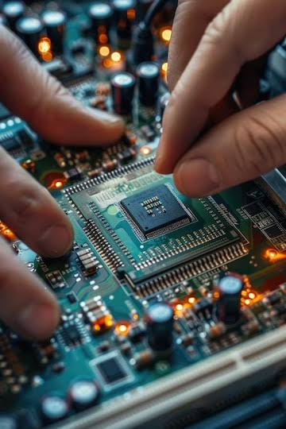
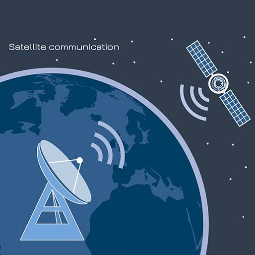
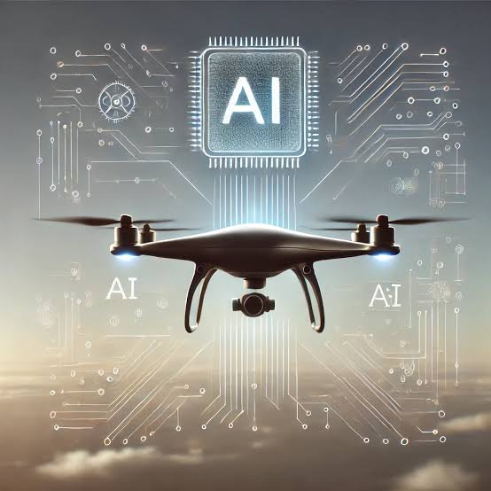

About the Department
The Department of Electronics and Communication Engineering, in collaboration with Artificial Intelligence, prepares students to solve complex problems in electronics, data, and intelligent systems. Our goal is to cultivate tech professionals who are both innovators and leaders.
Students gain expertise in analog/digital circuits, communication protocols, and AI-based algorithms. With access to high-end laboratories and industry-linked projects, they graduate ready to drive next-gen innovations in automation, robotics, and smart systems.
Courses Offered
We offer a blend of core electronics and cutting-edge AI courses:
- Digital Signal Processing
- Microprocessors & Embedded Systems
- Machine Learning & AI
- VLSI & System on Chip
- Wireless Communication
- Image Processing & Computer Vision
Research Areas
The department is a recognized center for advanced research in Electronics and Artificial Intelligence. We emphasize interdisciplinary work that transforms real-world challenges into innovative solutions through smart tech.
IoT & Smart Devices
Building connected devices for smart cities, homes, and healthcare using embedded intelligence.
AI in Communication
Using AI to optimize spectrum usage, predict signal quality, and improve data transmission in 5G/6G networks.
AI-Powered Drones
Developing autonomous aerial systems for environment monitoring, disaster response, and security.
Medical Imaging
Research on AI-driven diagnostics from radiology scans to assist doctors and reduce human error.